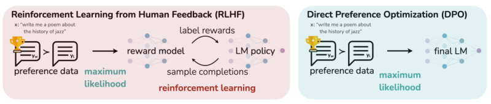
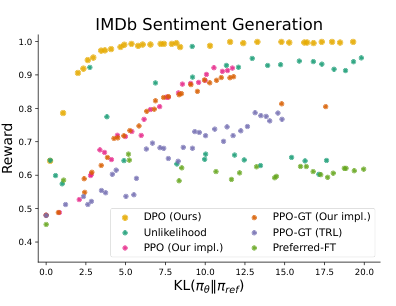
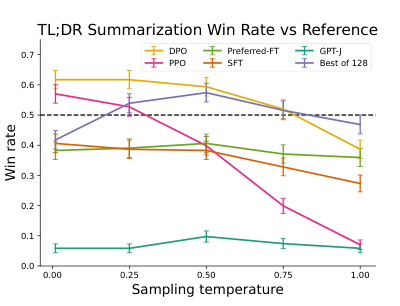
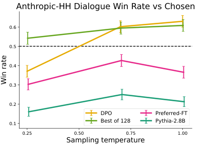

DPO makes the policy its own reward model and drops RLHF's RL loop
Rafailov and colleagues proved the swap targets the same KL-constrained objective as PPO-based RLHF, and no later work overturns that theorem, though the record after it locates DPO's real cost in offline practice.
Direct Preference Optimization: Your Language Model is Secretly a Reward Model
Read the paperWhile large-scale unsupervised language models (LMs) learn broad world knowledge and some reasoning skills, achieving precise control of their behavior is difficult due to the completely unsupervised nature of their training. Existing methods for gaining such steerability collect human labels of the relative quality of model generations and fine-tune the unsupervised LM to align with these preferences, often with reinforcement learning from human feedback (RLHF). However, RLHF is a complex and often unstable procedure, first fitting a reward model that reflects the human preferences, and then fine-tuning the large unsupervised LM using reinforcement learning to maximize this estimated reward without drifting too far from the original model. In this paper we introduce a new parameterization of the reward model in RLHF that enables extraction of the corresponding optimal policy in closed form, allowing us to solve the standard RLHF problem with only a simple classification loss. The resulting algorithm, which we call Direct Preference Optimization (DPO), is stable, performant, and computationally lightweight, eliminating the need for sampling from the LM during fine-tuning or performing significant hyperparameter tuning. Our experiments show that DPO can fine-tune LMs to align with human preferences as well as or better than existing methods. Notably, fine-tuning with DPO exceeds PPO-based RLHF in ability to control sentiment of generations, and matches or improves response quality in summarization and single-turn dialogue while being substantially simpler to implement and train.1
RLHF gets there in two stages and a reinforcement-learning loop
The alignment recipe an ML engineer already knows from InstructGPT runs in two stages. First it fits a reward model to human preference labels, training a network to score a completion the way the raters did. Then it holds that reward model fixed and optimizes the language model against it with reinforcement learning, usually PPO. A KL penalty keeps the policy from wandering away from the fine-tuned starting point.23 The second stage is the expensive one. It samples completions from the current policy in the training loop, scores them with the reward model, and backpropagates a policy-gradient update. A run therefore carries a separate reward network, an online sampling loop, and the hyperparameters that keep PPO stable.1
Direct Preference Optimization keeps the objective and deletes the machinery. It reaches the policy that the two-stage pipeline is trying to produce, but it never fits an explicit reward model and never runs a reinforcement-learning loop. The whole method is one supervised classification loss over pairs of completions, of the same shape the reward model was trained with, applied directly to the language model.1

The claim is not that DPO approximates RLHF. It is that DPO optimizes the same objective RLHF does. The derivation below shows why no separate reward model is needed: the policy already carries one.
The objective has a closed-form optimum nobody can evaluate
The KL-constrained objective is not, in fact, opaque. For a fixed reward function it has a known optimal policy, a result standard in the reinforcement-learning-as-inference literature that the paper restates for its own reward.1 The optimum reweights the reference model by the exponentiated reward.
The derivation of that form is short, and the reparameterization to come reuses its one moving part. Write the objective as a minimization, then divide the exponentiated-reward expression by its own sum so it becomes a valid distribution. The objective collapses into a KL divergence from the policy to that distribution, minus a term in Z(x). A KL divergence is minimized at zero when its two arguments are equal, and Z(x) does not depend on the policy. So the optimum is reached exactly when the policy equals the reweighted reference above. The step is licensed by that one fact: Z(x) is a constant the minimization over \pi_\theta can ignore.1
The catch is Z(x) itself. It sums over every completion the model could produce, which for a language model is every string, so it cannot be computed or even estimated cheaply. The exact optimal policy is written down and unusable in the same line. RLHF's response is to give up on the closed form and approximate the objective with sampling. DPO's response is the opposite.
Reading the reward off the policy
Instead of solving for the policy given the reward, solve for the reward given the policy. The optimal-policy equation is a relationship between a reward and its policy, and it can be rearranged so the reward stands alone. Taking logs and isolating r(x,y) gives the reparameterization.
Every reward function can now be expressed through its own optimal policy and the reference policy, plus the same intractable Z(x) as before. Nothing has been approximated. This is an identity, true for any reward and the policy the previous section proved optimal for it. The appendix formalizes what the rearrangement means. Two reward functions that differ only by a function of the prompt, r'(x,y) = r(x,y) + f(x), induce the same Bradley-Terry preferences and the same optimal policy. Rewards therefore fall into equivalence classes, and the log-ratio above is the one member of each class already normalized into a valid policy.1
The paper's title is the literal content of this step. A policy trained against the reference model defines a reward, its own log-probability ratio scaled by \beta, and that reward is a genuine member of the Bradley-Terry equivalence class the reward model was fit to. There is no separate reward network to recover because the policy is already carrying one.1
One loss, and a gradient that knows when it is wrong
The reparameterization still carries Z(x), so on its own it has traded one intractable quantity for another. What removes it is substituting the reparameterized reward back into the Bradley-Terry model. The preference probability depends only on the difference of two rewards at the same prompt, and \beta \log Z(x) is identical for both completions, so it cancels.1
The intractable normalizer is gone because the step that removed it needed only that Z(x) be the same for two completions of one prompt, which it is by construction. The preference model is now written entirely in terms of the policy and the reference model. Fitting it by maximum likelihood, exactly as the reward model was fit, gives the DPO loss.
- \beta \log \tfrac{\pi_\theta(y_w \mid x)}{\pi_{\mathrm{ref}}(y_w \mid x)}The implicit reward of the preferred completion: the policy's log-probability ratio against the reference, scaled by \beta.
- \beta \log \tfrac{\pi_\theta(y_l \mid x)}{\pi_{\mathrm{ref}}(y_l \mid x)}The same implicit reward for the dispreferred completion.
- \log \sigmaThe Bradley-Terry logistic loss, unchanged from the reward model: push the reward gap so the preferred completion wins.
- (x,\,y_w,\,y_l)\sim\mathcal{D}One prompt with a preferred and a dispreferred completion, the same preference data RLHF trains its reward model on.
The gradient says what the loss does to the model. Writing \hat{r}_\theta(x,y) = \beta \log \tfrac{\pi_\theta(y\mid x)}{\pi_{\mathrm{ref}}(y\mid x)} for the implicit reward, the update raises the log-probability of the preferred completion and lowers that of the dispreferred one, weighted by how badly the current implicit reward orders the pair.
That weight is not cosmetic. Drop it and the objective becomes a naive ratio that the paper reports drives the model to degenerate, an ablation the authors keep in the appendix because the failure is easy to reach.1 DPO is a classifier that spends gradient in proportion to how wrongly the policy, read as a reward model, currently ranks the pair in front of it.
The reward model the pipeline trains was already recoverable from the policy it was training.
What the experiments actually settle
A derivation that reaches the same objective on paper still has to be shown reaching comparable policies in practice. The paper's cleanest test is the one where the reward is known exactly. In controlled sentiment generation on IMDb prefixes, the preference pairs come from a pre-trained sentiment classifier. The ground-truth reward is therefore available, and the trade-off between reward and KL divergence to the reference is exactly computable. Plotting expected reward against KL, DPO's frontier sits above every baseline at every KL value, including PPO and a PPO variant given access to the ground-truth reward.1 For the same drift from the reference model, DPO buys more of what the objective was asking for.

On tasks where the reward is not known, the paper evaluates win rates judged by GPT-4. Summarizing Reddit TL;DR posts with a GPT-J policy, DPO peaks near a 61% win rate against the human reference summaries at sampling temperature zero. That beats PPO's 57% best case, and it holds as the temperature rises while PPO collapses toward the base model.1 The comparison the reader can hold is temperature robustness. PPO's advantage lives at one temperature and evaporates off it; DPO's does not.

Single-turn dialogue on the Anthropic Helpful-Harmless data uses a Pythia-2.8B policy, with the win rate measured against the dataset's own preferred responses. DPO starts below that chosen-response baseline at the lowest temperature and rises above it as temperature climbs, overtaking the compute-heavy Best-of-128 reference at the top of the range. Among the methods trained here, the paper reports DPO as the only one to improve over the chosen responses.1

The paper also runs one out-of-distribution test, and it is the result to watch, because it is where the later record disagrees. Policies trained on Reddit TL;DR are evaluated zero-transfer on CNN/DailyMail news articles, and DPO's GPT-4 win rate against the ground-truth summaries lands above PPO's at both temperatures tested.
| Method | temp 0 | temp 0.25 |
|---|---|---|
| DPO | 0.36 | 0.31 |
| PPO | 0.26 | 0.23 |
The authors read this table cautiously, calling it an initial result that suggests DPO can generalize similarly to PPO-based models and asking for more comprehensive study.1 It is one transfer of a single trained pair of policies.
The theorem held; the practice got contested
One distinction has to stay fixed through everything that follows. DPO's central result is that its loss optimizes the same KL-constrained objective as RLHF, and no later work overturns it. Nobody has shown the objective-level equivalence is wrong. What the record after the paper contests is narrower and more consequential for a practitioner: what offline DPO, trained on a fixed preference set with no on-policy sampling, actually reaches compared to on-policy RLHF.
The sharpest disagreement is with the table above. Xu et al. built a comprehensive study to answer the question directly. They argue that the set of policies DPO can reach is a superset of what PPO can reach, and that the extra ones include out-of-distribution exploitative solutions. DPO is thus more exposed than PPO to the shift between the preference data and the model's own outputs. With careful tuning their PPO surpasses DPO across the benchmarks they test, reaching state-of-the-art on a hard code-competition suite.5 This does not refute the paper's table so much as outweigh it. It is a single zero-transfer test read one way, against a broader and harder suite with heavy PPO tuning read the other. DPO's own out-of-distribution evidence was thin, and the fuller test that followed reads the shift as a liability where the preliminary result had read it as a strength.
The generation gap is not confined to one benchmark. Tang et al. find a clear and persistent advantage for online alignment over offline methods such as standard DPO at matched budgets. Offline-trained policies get good at classifying pairs but worse at generating. The gap survives both contrastive and non-contrastive losses, and it does not close by scaling the policy network.6 Their result points at on-policy sampling itself, the very loop DPO removed, as the active ingredient rather than the form of the loss.
Two analyses locate failure modes inside the offline loss. Azar et al. show that DPO's substitution of pointwise Bradley-Terry rewards for pairwise preferences can hollow out the KL regularization. When the empirical preference between two completions is near-deterministic, the logistic transform drives the target reward gap toward infinity. The constraint then stops binding regardless of \beta, and the policy collapses toward determinism. Their IPO loss regularizes the policy log-ratio toward a bounded margin so the KL term keeps binding.7 Pal et al. show the gradient's stated behavior can fail on the preferred side. The loss depends only on the relative reward margin, so it can be reduced by pushing the preferred completion's log-probability down, as long as the dispreferred one falls faster. DPO can therefore lower the likelihood of the very response it prefers, most acutely when the two completions differ by a small edit distance. Their DPO-Positive term penalizes the preferred log-probability for dropping below its reference value. It trained the Smaug-72B model, reported as the first open model above 80% average on the Open LLM Leaderboard.8
- The theorem: DPO's loss optimizes the same KL-constrained objective as RLHF, uncontested since publication.1
- The clean sentiment result, where a known reward makes the reward-vs-KL frontier exact and DPO dominates PPO.1
- Matching or beating PPO on the paper's summarization and dialogue tasks, at a fraction of the implementation cost.1
- Offline DPO trails on-policy alignment at matched budgets, and scaling the policy does not close the gap.6
- Its reachable policies include out-of-distribution exploitative ones; tuned PPO beat DPO in the fuller comparison.5
- Near-deterministic preferences can void the KL constraint, and the loss can drive down the preferred response's likelihood.78
The derivation is correct and its central claim stands. A language model trained on preference pairs carries an implicit reward, so the RLHF objective can be reached without a reward network or an RL loop. The follow-up record establishes something the theorem does not cover. Reaching the objective's optimum on paper and reaching a good policy from a fixed offline dataset are different achievements, and the difference is on-policy sampling. DPO earned its place as a default because the simpler half of that trade is often enough. The case for keeping the RL loop is now specific and evidenced, in the measured out-of-distribution and generation-quality gaps.56
Sources
- arXiv · Rafailov et al., Direct Preference Optimization: Your Language Model is Secretly a Reward Model (NeurIPS 2023)
- arXiv · Ouyang et al., Training language models to follow instructions with human feedback (2022)
- arXiv · Schulman et al., Proximal Policy Optimization Algorithms (2017)
- Biometrika · Bradley & Terry, Rank Analysis of Incomplete Block Designs: I. The Method of Paired Comparisons (1952)
- arXiv · Xu et al., Is DPO Superior to PPO for LLM Alignment? A Comprehensive Study (ICML 2024)
- arXiv · Tang et al., Understanding the performance gap between online and offline alignment algorithms (2024)
- arXiv · Azar et al., A General Theoretical Paradigm to Understand Learning from Human Preferences (2023)
- arXiv · Pal et al., Smaug: Fixing Failure Modes of Preference Optimisation with DPO-Positive (2024)